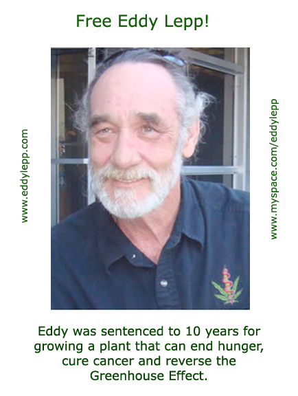
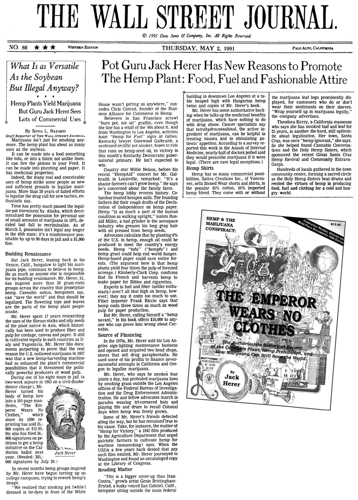

I'm sorry to say that Jack passed away this morning. Thank you all so much for the love and support you've given us. When we have funeral arrangements, I will let you know. Thank you. Jeannie Herer 4/15/2010 |
Cannabis Hemp News
| 04/07/2010 | Canada's hemp acres on the rise | |
| 04/07/2010 | Hemp fibre processor gets public funding country-guide.ca |
|
| 04/07/2010 | B-Real Announces Launch of Annual Marijuana Festival, the Spring Gathering ballerstatus.com |
|
| 04/07/2010 | Evolution and cannabis -- human brain is hard-wired to experience marijuana's highs dscriber.com |
Donations for Jeannie Herer

Look at the gray leaves!


12/2/09 Message from Rick Simpson On November 25th, one day before I was crowned the Freedom Fighter of the Year 2009 at the Cannabis Cup in Amsterdam, I received a word that I have been raided again by the RCMP. I contacted Tim Hunter at the Amherst attachment and asked I was being charged. Of course, he refused to give me straight answer. All he would say was that the RCMP wanted to talk to me. After openly growing hemp in my backyard this past summer and announcing this fact to the public on tom Young´s open line talk show in June, how could the RCMP not be aware of my activities? The truth is they knew exactly what I was doing. RCMP officers were even sending people that needed help to me. I can only surmise that the purpose of this raid was to keep me from returning to Canada. If I return home, I will be arrested and put in jail without bail or medicine. I am not afraid of their jails but I cannot go without my medicine, the system has nothing that could help me with my conditions. So for me to return to Canada would be like committing suicide. I would be thrown in jail and denied my medicine and a short time later you would hear in the news that Rick Simpson died of natural causes. I cannot tell the people of Canada who are depending on my presence to help their medical conditions how sorry I am. But it was not me who caused this situation. It seems the goal is to keep me from returning home and they succeeded. But to what end? All hemp magazines on this planet are now telling their readers how to heal themselves with this wonderful medicine. If governments want to live in denial, it will be short-lived. We are gaining tens of thousands of followers every day. You cannot stop the truth. For me, going to the Cannabis Cup was a great adventure and I would like to thank Greenhouse Seeds for making this trip possible. To stand before hundreds of people and being crowned as the Freedom Fighter of the Year was a great honour. But it is an honour that comes with a price. Most people who have worn the triton hat have gone to jail for spreading the truth. To have this honour bestowed on me and to join the ranks of people like Jack Herer and Eddy Lapp has given my life even more purpose. Jack Herer believed as I do that the key to hemp´s complete legalisation is in the magnificent medicine this plant can produce. Once the public becomes aware of the fact that properly made hemp medicine can cure or control practically any medical condition, who is going to stand against the use of hemp? I must also mention the great work done by Steve Hagar and High Times magazine. Cannabis cures cancer right on their cover. It is so refreshing to know that the system has no control over hemp publications. What a shame are so-called free press and news media refuse to print the truth. I must also tip my triton hat to the Weed World out of the UK. They were the first hemp magazine to cover my work. They even released a special edition in September 2009 featuring a number of articles that I wrote about hemp medicine and other aspects of the hemp movement. I must also acknowledge the great work done by Bayer & Romsy Hemp Cosmetics and Konoptikum hemp magazine of the Czech Republic. This publication has also done much to spread the truth about hemp in Europe. Presently, I am staying with friends in Europe but it saddens me to be unable to be with my family and loved ones during Christmas. For the time being, it seems I will be seeking asylum in Europe. This may not be a bad thing since seminars about hemp oil are being arranged in many countries. I hate to go begging but if anyone out there has an extra few dollars they can donate to us, it would greatly ease the burden on me. Of course it costs money to live in Europe and we are expending a great deal putting on seminars and spreading the word. So any help you could provide would be greatly appreciated. They say everything happens for a reason, so I will simply put my head down and continue forward. To anyone in Canada or the US requiring help, simply follow the information we provided at www.phoenixtears.ca. Almost anyone can produce this medicine without difficulty, if they follow the instructions. Again, I apologize to everyone for not returning. But as you can see, my hands are tied. We are at the dawn of new age in medicine and a new day for mankind. Not only can hemp save the world, it can eliminate a great deal of human suffering and can even put an end to starvation. What are we waiting for? Join with me and let us put an end to this madness. It can only survive if we continue to sit on our backsides and do nothing. Stand up and be counted and let us give ourselves a chance to heal. Best
wishes, |

Thank you



Information on Mailing and Commissary for Rev. Eddy Lepp
Eddy Lepp - King of Compassion - The Individuals
Rick Simpson in Defence of Eddy Lepp
 .
.

The
public service advertisement appears in the National Review, the New
Republic, the American Prospect, The Nation, Reason Magazine, and The
Progressive in the winter of 2009. |
Retirees demand marijuana - Video


|
Let Your Voices be Heard!
President
Barack Obama
The White House
1600 Pennsylvania Ave NW
Washington, DC 20500
Phone: (202) 456-1414

© Jack Herer 2009